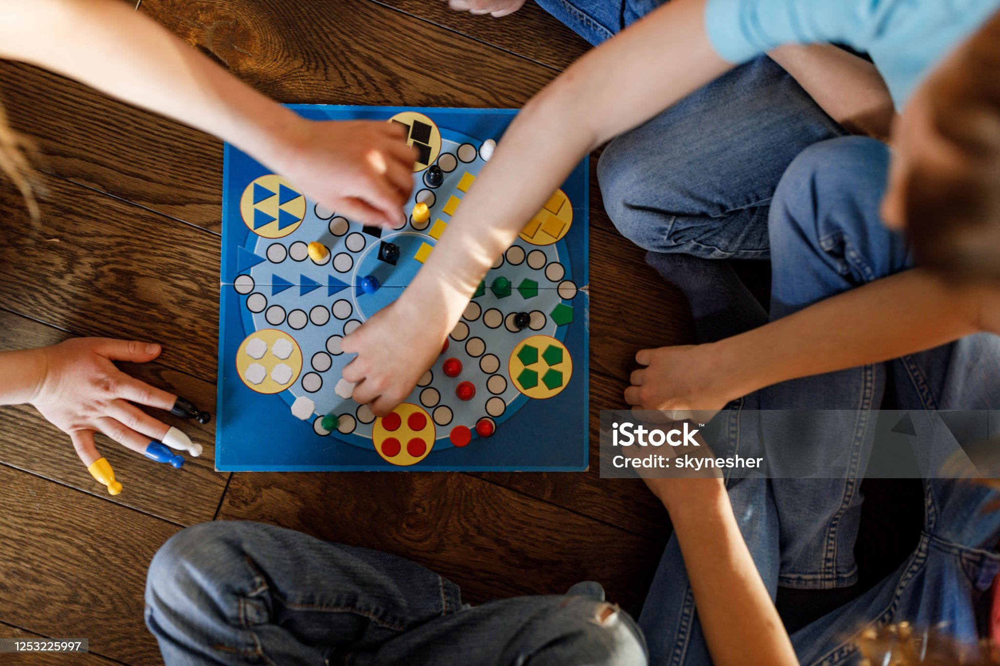

Szabályok
- Életkor: 6-99
- Játékos: 1-4 játékos
- Játék célja: Visszajutni a Földre
- Társasjáték tartalmaz:
- egy pályát
- 20 kártyát (10 célkártya, 10 balszerencsekártya)
- 2 dobókockát
- űrhajó alkatrészeit

Játékmenet
összekeverjük a célkártyákat és mindenkinek az osztó kioszt 1 célkártyát, ezeken a kártyákon 1-1 cél található, amit teljesíteni kell, csak akkor lehet nyertes az adott Játékos ha sikeresen teljesítette a célt. A dobások sorrendje az alapján dönthető el, hogy ki dobja a legnagyobbat 1 dobókockával, ezután pedig mindig csökkenő sorrendben történik, ha dobott mennyiség valamelyik társsal egyenlő újra kell dobni. Játék hátralévő részében - kivéve ahol a játékszabályzat mást mond- már két dobókockával kell dobni. 
A szörnyek elhelyezése
2x kell dobni: először egy dobókockával, ez mondja meg hány darab szörnyet kell lerakni, második alkalommal viszont mindkettő dobókockával kell dobni a Játékosnak, ez azt mondja meg, hogy hány darab szörnyet kell elhelyezni a pályán, ezt a Játékos dönti el, hogy hova. Ha a Játékos olyan bolygóra lép, ahol egy szörny van, akkor húznia kell egy balszerencsekártyát, ami rá vonatkozik. Továbbá a Birodalom (továbbiakban: Ellenség) azt a bolygót megkapja. Ha annyi mezőt elfoglalt az Ellenség, hogy nincs hova lépnie a Játékosoknak, akkor győztes nélkül marad a játék.